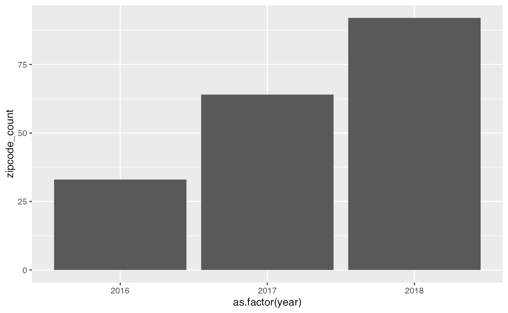

Seattle pet name and distribution
seattle-pet-name.RmdPurpose of the package:
The purpose of seattlepetname package allows users to
understand the preference of primary breeds and pet names of pet owners
in Seattle. The package also allows users to retrieve the distribution
of licensed pet in Seattle according to zip code districts.
The distribution of licensed pet in different zip code districts show that whether a particular district is an deal habitat for a particular primary breed. The preference of pet name allow user to decide an unique name for their pets.
Target users of the package:
People living in Seattle who wants to own a pet.
Data description:
The data used in this package is the record of Seattle licensed pet from 2003 to 2018. The author of the data set is City of Seattle.
Usage of the function:
- The preference of primary breeds of pet owners in Seattle
By entering the primary breeds in max_pribreed()
function, a data frame with the 5 zip code districts that have the
highest number of a particular primary breed will be returned. Users can
check the name of the primary breed in the data set. The following
example used the “Old English Sheepdog” for demonstration.
The data frame allow users to understand a particular primary breed is more preferred by pet owners in a particular zip code district. It implies that the district is more suitable for a particular primary breed.
- Users have to enter the input as character string.
- The input is case-sensitive, for example it will create error when entering “dog” instead of “Dog”.
max_pribreed("Old English Sheepdog")
#> # A tibble: 5 × 2
#> zip_code count
#> <int> <int>
#> 1 98115 7
#> 2 98118 7
#> 3 98105 6
#> 4 98199 6
#> 5 98136 5- The zip code that has the highest number of licensed pets of a particular year
By entering the year in zipcode_max() function, a data
frame with the zip code districts that have the highest number of
licensed pets overall will be returned. The following example used year
2018 for demonstration.
The data frame allows users to understand the distribution of licensed pet of zip code district in Seattle over years. The district that has the highest number of licensed pet may have more facilities for pets.
*The range of the year is from 2015 to 2018, as record years prior 2015 are less than 20 observations.
*Users have to enter the input as character string.
zipcode_max("2018")
#> # A tibble: 1 × 3
#> # Groups: year [1]
#> year zip_code n
#> <dbl> <int> <int>
#> 1 2018 98115 2944- The zip code that has the lowest number of licensed pets of a particular year
By entering the year in zipcode_min() function, a data
frame with the zip code districts that have the lowest number of
licensed pets overall. The following example used year 2018 for
demonstration.
The data frame allows users to understand the distribution of licensed pet of zip code district in Seattle over years.
*The range of the year is from 2015 to 2018, as record years prior 2015 are less than 20 observations.
*Users have to enter the input as character string.
zipcode_min("2018")
#> # A tibble: 1 × 3
#> # Groups: year [1]
#> year zip_code n
#> <dbl> <int> <int>
#> 1 2018 9811 1- The top 5 pet name of a particular year
By entering pet names and year in name_of_the_year()
function, a data frame with the top 5 popular names and the respective
count of a particular year will be returned.
When the name is not on the top 5 list, only a character string “This is not a popular name of this year!” will be returned to indicate that the name is not popular. When the name is on the top 5 list, the data frame mentioned above and the character string “This is a popular name of this year!”.
The data frame allows users to understand the trend of pet name in Seattle.
The range of the year is from 2015 to 2018, as record years prior 2015 are less than 20 observations.
Users have to enter the input as character string.
The input is case-sensitive, for example it will create error when entering “dog” instead of “Dog”.
name_of_the_year("Silas", "2018") # When the name is not on the top 5 list
#> [1] "This is not a popular name of this year!"
name_of_the_year("Lucy", "2018") #When the name is on the top 5 list
#> [1] "This is a popular name of this year!"
#> # A tibble: 5 × 3
#> # Groups: year, animals_name [5]
#> year animals_name n
#> <dbl> <chr> <int>
#> 1 2018 Lucy 271
#> 2 2018 Charlie 245
#> 3 2018 Luna 238
#> 4 2018 Bella 207
#> 5 2018 Max 176- The number summary of pet distribution in each year
By entering the year in pet_summary() function, a data
frame with the mean, median, standard deviation and the number of zip
code recorded of a particular year will be returned. The number summary
is based on the number of districts recorded in a particular year.
The data frame allow users to understand the trend of distribution of pet in Seattle.
The range of the year is from 2015 to 2018, as record years prior 2015 are less than 20 observations.
Users have to enter the input as character string.
pet_summary("2018")
#> # A tibble: 1 × 5
#> year mean median sd zipcode_count
#> <dbl> <dbl> <dbl> <dbl> <int>
#> 1 2018 361. 2.5 679. 92- The top 10 popular pet name (by species) in Seattle
By entering the species in top_name() function, a plot
that shows the top 10 popular name of a particular species will be
returned .
The data frame allow users to understand the preference of pet names (by species) of pet owners in Seattle.
- Users have to enter the input as character string.
- The input is case-sensitive, for example it will create error when entering “dog” instead of “Dog”.
top_name("Dog") - utilize the function with
ggplot2anddplyr:
Using the pet_summary() as example, functions in this
package facilitates the data analysis process. Users can compare the
data from different year utilizing different packages to create
meaningful plots.
summary_2016 <- pet_summary("2016")
#> # A tibble: 1 × 5
#> year mean median sd zipcode_count
#> <dbl> <dbl> <dbl> <dbl> <int>
#> 1 2016 47.6 49 39.2 33
summary_2017 <- pet_summary("2017")
#> # A tibble: 1 × 5
#> year mean median sd zipcode_count
#> <dbl> <dbl> <dbl> <dbl> <int>
#> 1 2017 265. 4 399. 64
summary_2018 <- pet_summary("2018")
#> # A tibble: 1 × 5
#> year mean median sd zipcode_count
#> <dbl> <dbl> <dbl> <dbl> <int>
#> 1 2018 361. 2.5 679. 92
summary <- full_join(summary_2016, summary_2017)
#> Joining, by = c("year", "mean", "median", "sd", "zipcode_count")
summary <- full_join(summary, summary_2018) %>%
select(year, zipcode_count)
#> Joining, by = c("year", "mean", "median", "sd", "zipcode_count")
ggplot(summary, aes(x = year, y = zipcode_count)) +
geom_col()